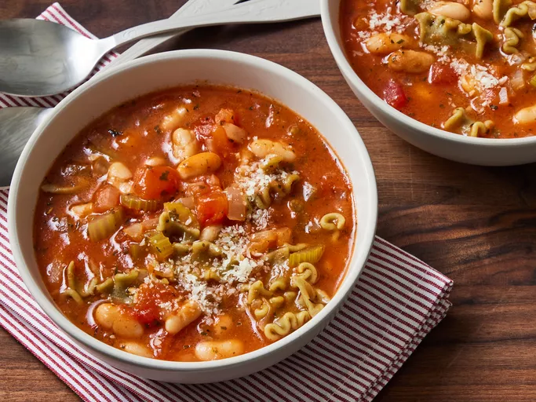

Pasta e Fagioli

Description
Pasta e Fagioli is a traditional Italian soup made with pasta and beans. It's hearty, comforting, and perfect for a cozy meal.
Ingredients
- 1 cup ditalini pasta
- 1 can cannellini beans
- 1 can diced tomatoes
- 4 cups vegetable broth
- 1 onion, diced
- 2 cloves garlic, minced
- 2 tbsp olive oil
- 1 tsp dried oregano
- 1 tsp dried basil
- Salt and pepper to taste
Steps
- Heat olive oil in a large pot over medium heat.
- Sauté onion and garlic until fragrant.
- Add diced tomatoes, cannellini beans, and vegetable broth.
- Stir in oregano, basil, salt, and pepper.
- Bring to a boil, then reduce heat and simmer for 15 minutes.
- Add ditalini pasta and cook until tender.
- Serve hot and enjoy!